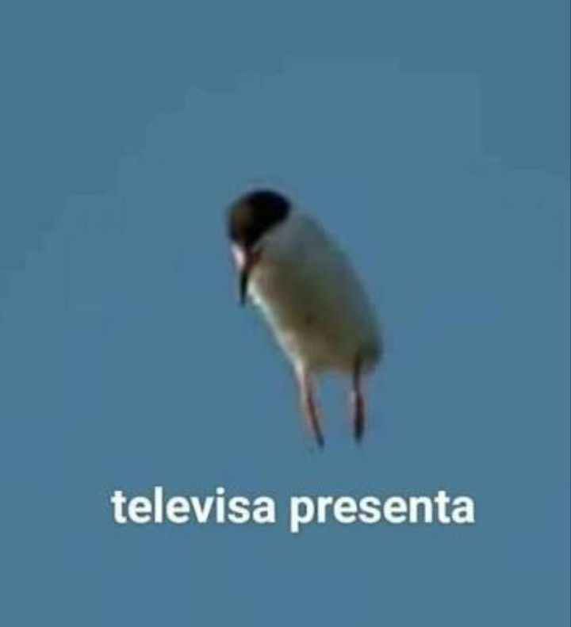
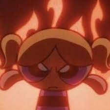

Biografía

Yo naci un 4 de abril del 2006 en Tampico Tamaulipas ,naci con 2 dientes y segun mi mamá enojada.
Desúes de ser obligada a vivir y que mi mamá se recuperara nos mudamos a Reynosa donde despues de 4 años de paz
y tranquilidad nacio mi hermano que cuando naio me cai bien despues empezo a hablar y no lo soporte
,despues de los 10 nos mudaos a queretaro donde acabe la primaria y secundaria en la mismo escuela.
He llegado a tener varios hobbies como:
| Hobbie |
Inicie |
Lo deje |
| Ballet |
A los 6 |
A los 10 |
| Basquetball |
A los 8 |
A los 12 |
| Patinaje |
A los 11 |
A los 14 |
| Piano |
A los 8 |
Actualmente |
| Guitarra |
A los 9 |
A los 12 |
| Box |
Hace un año y medio |
Actualmente |
| Pintura |
A los 11 |
Actualmente |
| Dibujo |
A los 10 |
Actualmente |
Pero como se ve soy super constante y actualmente voy al box casi todos los dias ,tomo clases de Piano
los sabados y practico en mi casa , y la pintura y dibujo cuando tengo tiempo y ganas los mismo aplica
para leer,pero cosas como en piano y el ballet si he hecho recitales y presentaciones publicas.
Una de mis metas es tener una biblioteca, los libros se consideran bibliotecas cuando tiene más de 1000
libros , actualmente tengo 65 libros mios.
Tambien he echo rompecabezas como pasatiempo o lo intente pero solo me gustaba
colgarlos.
Actualmente solo tengo un gato y un perro en mi casa pero llegue a tener 3 perros
muchos peces y cotorros.Migata tiene 2 años y mi perro tiene 12 casi los mismos que mi hermano.
Como bebe que era tuve varios accidentes tsnto mios como causados por mi, como tomar cloro,
me olvidaron en el carro, le vole un diente(de leche ) a mi hermano, me olvidaron en la escuela
y son las que yo me acuerdo que sucedieron.
esta es mi pagina favorita de todo internet
Ahora con ustedes el secreto del universo

Mis gustos
Música
Animales
Leer
Cafe
dibujar
Mis Disgustos
Mis vecinos
El calor
No tener dinero
El higado
Las filas
FIN.